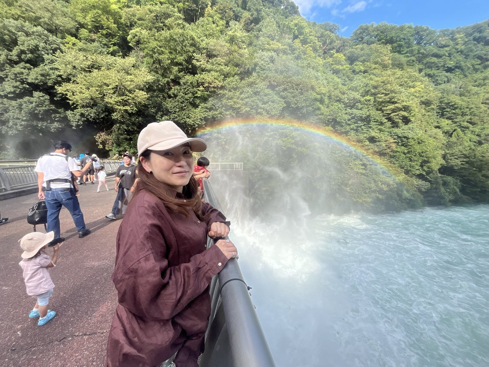

2026.09.22
勝沼のはずが、宮ヶ瀬ダム。
渋滞で予定変更。でも放流と虹に出会えた一日。
写真と日記を見る →笑って、あきれて、やっぱり大好き。家族の誕生日、朝市、旅、送り火。裕子さんと過ごした、ちょっとおかしな毎日を写真と動画で。
日記を読む ↓ 写真を見る ↗
該当する日記がありません。

検査技師として働く裕子さん。看護師の公泰と亜耶佳、永田のおばあちゃんの家に暮らす亮裕、法律を知らない（？）法学部生の勇。そんな一家の日常を、写真とともに残していきます。
公開用にする場合は、ご家族の同意を確認し、勤務先や生活圏などの詳細を非公開にすることをおすすめします。
地図は各スポットへのリンクです。正確な自宅位置は掲載していません。